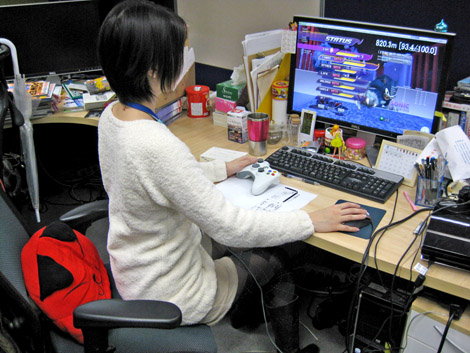
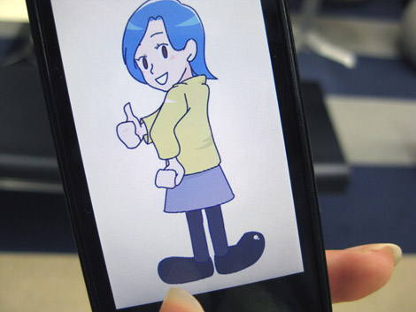
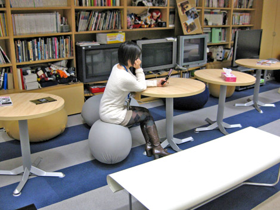

『セガ入社のきっかけのお話 (マツバラ編)』
2009年01月09日
こんにちは！ マツバラです。
今回は、サンタクララさんのリクエストにありました
「セガ入社のきっかけ」などについて語ろうと思います！
こんにちは。ヨシノです。
「ん？ 何のこと？」という方は、
こちらの記事をご参照くださいませ～。
……えーっと、語る前に、
もう一回、サンタクララさんのメールを読んでみようか。
「実は今、将来について悩んでいます。
マツバラさんとヨシノさんがなぜセガに入社しようと決めたのか教えてください！」……って書いてある。
なるほど、将来について、かあ。
お悩みについて、何か参考になること言えるかなあ。
あと……
「ソニックに対する愛情をズバリ、端的に！表現してみてください！」
……とも書いてあるよ。
ソニックきゅんへの愛ね！！
それはもう、任せて！！
……うるさくない程度によろしく。
じゃあまず、マツバラが語りなよ。
私、今回は聞き役。
私から？
まず、どこでセガを知ったの？
えーっと、私は小学生の頃から
テレビゲームが大っ好きでした！
そこで「ソニック」を遊んだんだけど、
そのときは「面白いゲームだなあ」と思っただけで
セガの名前は覚えませんでした。
そのあと、中学生になって
ゲームセンターで『バーチャファイター』にハマッていました！
そこで、ふと横を見たら……
青いハリネズミが(笑)
そうそう。
「あれっ、『バーチャファイター』作った会社って
「ソニック」作ったところだったんだ！」って驚いて
それからセガに興味がわきました。
それで、セガに入社したいと思ったの？
そう！
ずーっとゲームが好きだったから、
将来はゲームを作る人になりたいって思っていて
就職活動のときには、
もちろんセガにもチャレンジしました！
しかし、本当にゲームが好きだね。
ゲーム以外の趣味は、あったっけ？
え？
…………
…………
……もう、いいや。
ま、待って！ あるよ！
あるけど、パッと思いつかないっていうか～！
いや、もういいから。
じゃあ、最後にソニックをヒトコトで語って。
ソニックは私にとって、
子供のころのあこがれ そのものです！

マツバラ、自席にて『SWA』開発中の写真。
しかし、これでいいのかなあ。
今回、特にマツバラをいじめもせずに
真面目に語っちゃったけど……
私をいじめる必要はないでしょ！！
さて、次回はヨシノに語っていただきましょ～☆
---------------------------------------
追記
前回ヨシノの絵を送ってくれた方が
私の絵まで描いて送ってくださいました！
早速このように携帯壁紙にさせていただきました～☆

あっ、マツバラも描いてもらったんだ。
ふっふっふ、
もう、うらやましくないもんね～♪
漆原榊原さん、ありがとうございます！
それで、さっき1人で
携帯みつめてニヤニヤしてたんだ。
やだなあ、見られてたんだ～☆
うん、
あんまりに怪しかったから
思わず隠し撮りしちゃったよ。ほら。

1人で浮かれるマツバラ
い……
いつの間に！！
日時: 2009年01月09日 19:00 | パーマリンク


 ソニックを愛する、元気な『SWA』2年目プランナー。
ソニックを愛する、元気な『SWA』2年目プランナー。 マイペースな『SWA』2年目プランナー。
マイペースな『SWA』2年目プランナー。
 ご意見・ご要望はこちら
ご意見・ご要望はこちら RSS
RSS